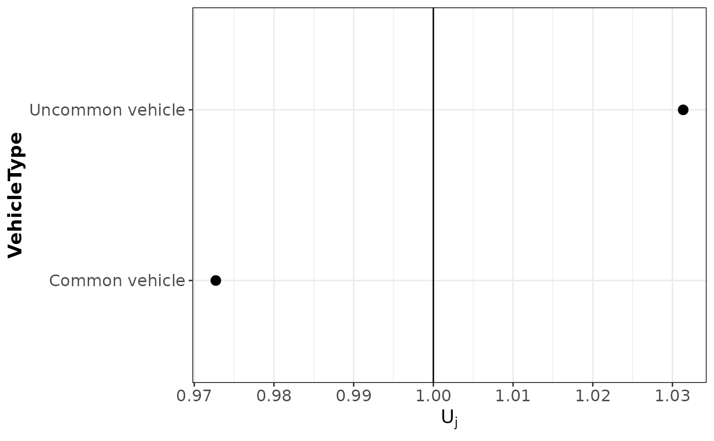
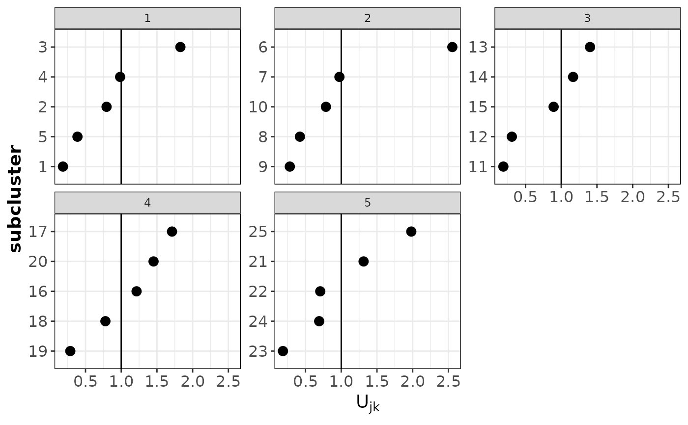
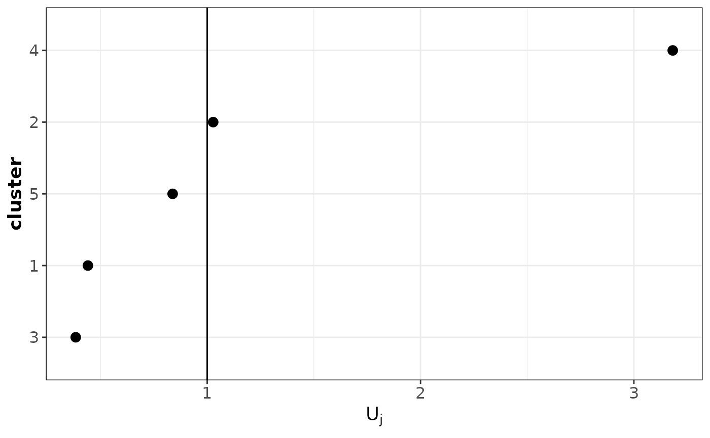
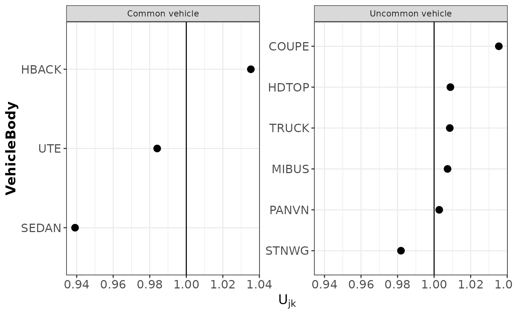

plotRE.RdUsing this function, you can create plots of the random effect estimates from fitted random effects models. To make
the plots, we rely on the ggplot2 package.
plotRE(
obj,
levelRE = c("all", "first", "second"),
colour = "black",
plot = TRUE
)an object of type hierCredibility, hierCredGLM or hierCredTweedie
indicates which hierarchical level has to be used. "all" plots both levels in the hierarchy,
"first" the first level in the hierarchy and "second" the second level.
colour for geom_point
logical indicating if the ggplot objects have to be plotted.
a list with ggplot objects.
# \donttest{
fitHGLM <- hierCredGLM(Y ~ area + gender + (1 | VehicleType / VehicleBody), dataCar, weights = w)
plotRE(fitHGLM)


#> $ggMLFj

#>
#> $ggMLFjk

#>
# }